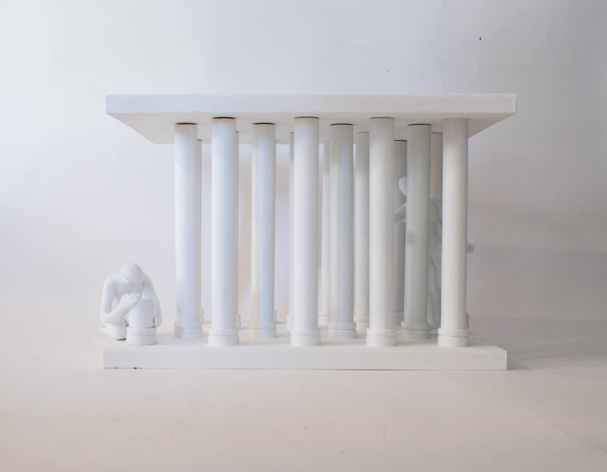
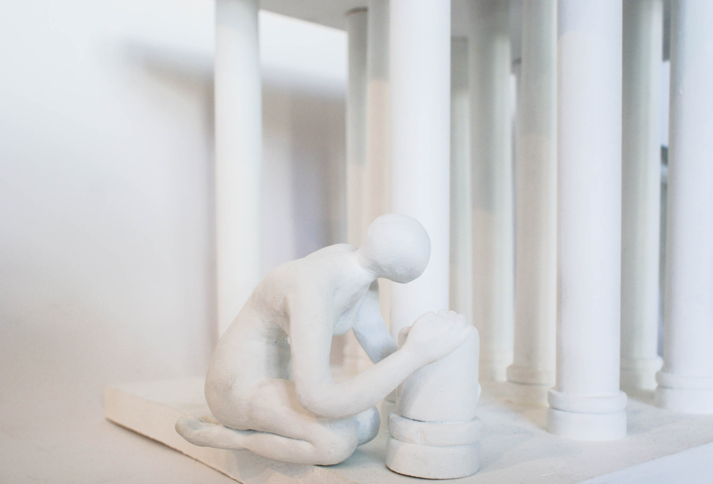
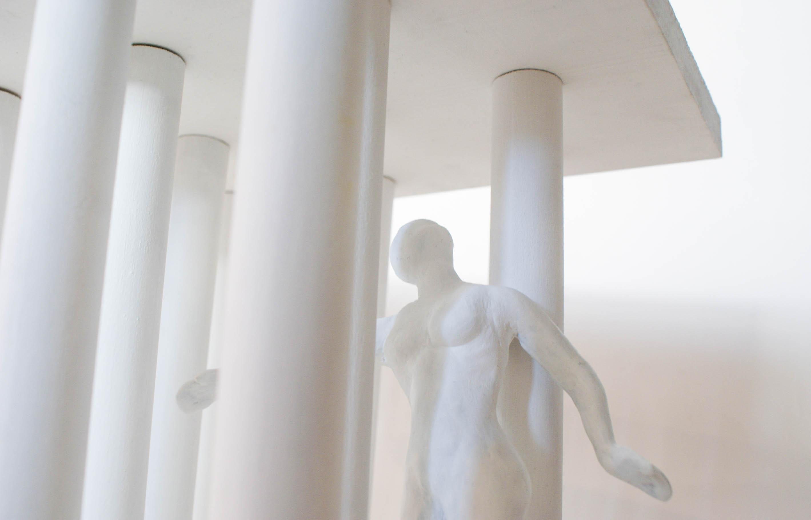
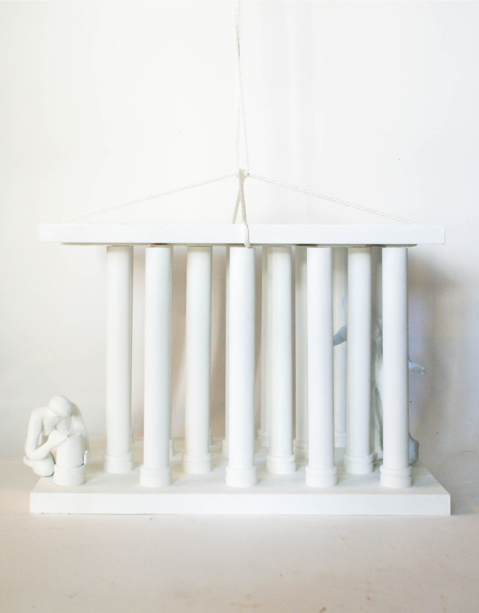
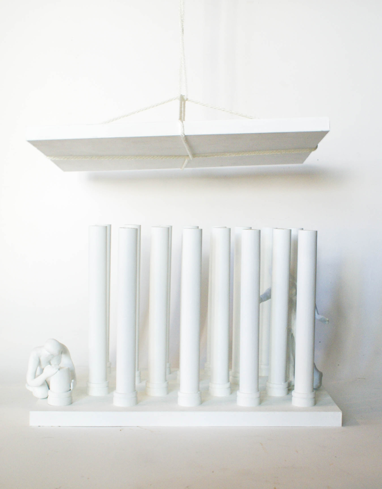

Interaction Designer
Su Hyun Jung

Untitled
Oct. 2016
This sculpture piece, made of wood and sculpey clay, displays two figures whom interact with columns. One who’s building a column implies that one accepts, appreciates, and wants to improve one’s own life. However, the moving person is trying to pass through the tightly-built columns in attempt to escape the given condition and start again. Columns, which are intended to hold ceilings and give support, end up blocking and hindering moving person’s way. In this sense, both figure represents two contradicting perception of the individual’s mind. Both actions maintain a neutral state, neither being good or bad, positive or negative--for choices and actions made by individuals are subjective and, therefore, cannot be generalized.




